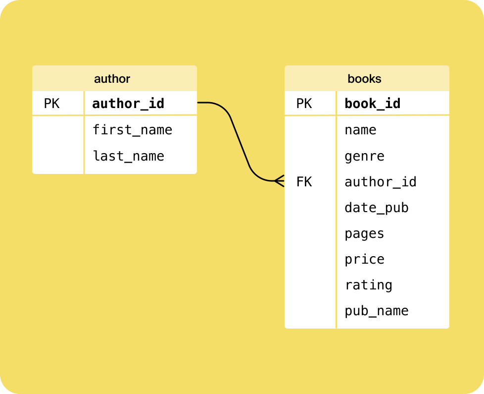

Semana 16: 📦 Recopilación y Almacenamiento de Datos (SQL)#
⚠️ Información:#
Vamos a trabajar usando el siguiente link para efectos practicos y academicos sobre la manipulación de datos con SQL
🧰 SQL como Herramienta para Trabajar con Datos#
SQL es el lenguaje universal para interactuar con bases de datos. Nos permite:
Consultar datos
Filtrar información relevante
Combinar tablas
rear nuevos conjuntos de datos derivados
🗄 Bases de Datos y Tablas#
Una base de datos contiene múltiples tablas. Cada tabla tiene filas (registros) y columnas (campos).
CREATE TABLE customer(
first_name VARCHAR(30) NOT NULL,
last_name VARCHAR(30) NOT NULL,
email VARCHAR(60) NOT NULL,
company VARCHAR(60) NULL,
street VARCHAR(50) NOT NULL,
city VARCHAR(40) NOT NULL,
state CHAR(2) NOT NULL DEFAULT 'PA',
zip SMALLINT NOT NULL,
phone VARCHAR(20) NOT NULL,
birth_date DATE NULL,
sex CHAR(1) NOT NULL,
date_entered TIMESTAMP NOT NULL,
id SERIAL PRIMARY KEY
);
📋 instrucciones básicas de SQL#
Comando SQL |
Descripción |
|---|---|
|
Crea una nueva tabla en la base de datos. |
|
Inserta registros (filas) en una tabla. |
|
Recupera datos de una tabla. |
|
Filtra los resultados según una condición. |
|
Ordena los resultados según una o más columnas. |
|
Limita el número de resultados devueltos. |
|
Omite un número de filas al mostrar resultados. |
|
Modifica los datos existentes en una tabla. |
|
Elimina registros de una tabla. |
|
Agrupa filas que tienen valores iguales en columnas. |
|
Filtra resultados después de un |
|
Combina filas de dos o más tablas relacionadas. |
|
Devuelve filas que tienen coincidencias en ambas tablas. |
|
Devuelve todas las filas de la tabla izquierda. |
|
Devuelve todas las filas de la tabla derecha. |
|
Renombra una columna o tabla temporalmente. |
|
Cuenta el número de filas. |
|
Calcula el promedio de una columna numérica. |
|
Suma todos los valores de una columna numérica. |
|
Devuelve el valor máximo o mínimo de una columna. |
|
Elimina duplicados de los resultados. |
|
Convierte el tipo de dato de una columna. |
|
Redondea un número a una cantidad específica de decimales. |
📋 Tipos de Datos en SQL#
📌 Tipos de Texto#
Tipo |
Descripción |
|---|---|
|
Almacena hasta n caracteres (espacios incluidos). Ideal para textos de longitud fija. |
|
Almacena hasta n caracteres. Recomendado para textos de longitud variable. |
|
Almacena texto de cualquier longitud (según configuración del sistema). |
|
Almacena texto de cualquier longitud. Utilizado para textos largos. |
📌 Tipos Numéricos - SERIAL (Autoincrementales)#
Tipo |
Rango |
Uso típico |
|---|---|---|
|
1 a 32,767 |
Claves primarias pequeñas. |
|
1 a 2,147,483,647 |
IDs estándar. |
|
1 a 9,223,372,036,854,775,807 |
IDs muy grandes. |
📌 Tipos Numéricos - INTEGER#
Tipo |
Rango |
Uso típico |
|---|---|---|
|
-32,768 a 32,767 |
Números pequeños, códigos, cantidades pequeñas. |
|
-2,147,483,648 a 2,147,483,647 |
Números enteros generales. |
|
-9,223,372,036,854,775,808 a 9,223,372,036,854,775,807 |
Grandes cantidades, finanzas, etc. |
📌 Tipos Numéricos - DECIMALES / FLOTANTES#
Tipo |
Precisión / Rango |
Descripción |
|---|---|---|
|
Hasta 131,072 dígitos enteros y 16,383 decimales |
Alta precisión para cálculos financieros. |
|
Igual que |
Sinónimo en la mayoría de los sistemas. |
|
1E-37 a 1E37 (6 posiciones decimales aprox.) |
Precisión moderada. |
|
1E-307 a 1E308 (15 posiciones decimales aprox.) |
Para valores grandes o rangos amplios. |
|
Igual que |
Usado cuando la precisión no es crítica. |
📌 Tipo BOOLEAN (Lógico)#
Valor Verdadero |
Valor Falso |
Valor Nulo |
|---|---|---|
|
|
|
|
|
Representa valor desconocido o no definido. |
⚒️ Funciones avanzadas de SQL para analistas#
📊 Agrupar Datos#
SELECT departamento, COUNT(*) FROM empleados GROUP BY departamento;
📈 Ordenar Datos#
SELECT * FROM empleados ORDER BY salario DESC;
⚙️ Procesar Datos Dentro de una Agrupación#
SELECT departamento, AVG(salario) FROM empleados GROUP BY departamento;
📅 Operadores y Funciones para Fechas#
SELECT DATE('now'), DATETIME('now', '-1 day');
🔎 Subconsultas#
SELECT * FROM empleados WHERE salario > (SELECT AVG(salario) FROM empleados);
🪟 Funciones de Ventana#
SELECT nombre, departamento, salario,
AVG(salario) OVER (PARTITION BY departamento) as salario_promedio
FROM empleados;
📈🖇️📉 Relaciones entre Tablas#
📊 Diagramas ER#

📁 Crear Varias Tablas#
CREATE TABLE departamentos (
id INTEGER PRIMARY KEY,
nombre TEXT
);
🔍 Buscar Valores Vacíos#
SELECT * FROM empleados WHERE departamento IS NULL;